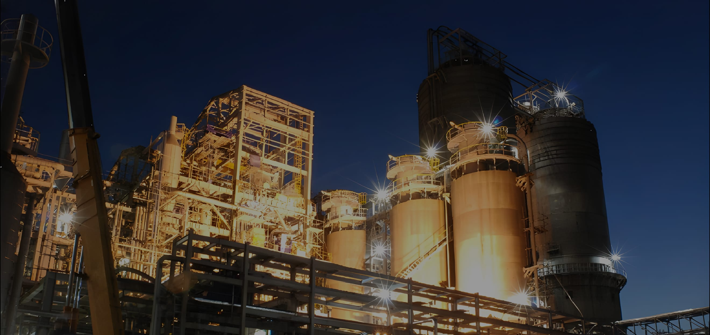
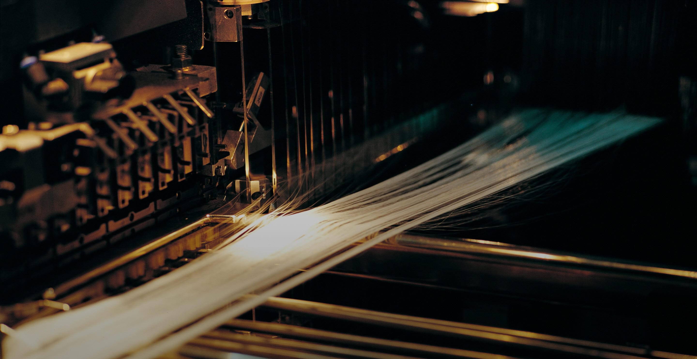
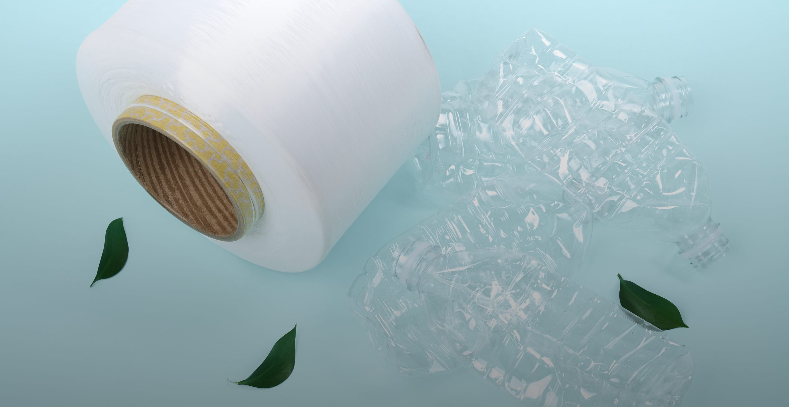
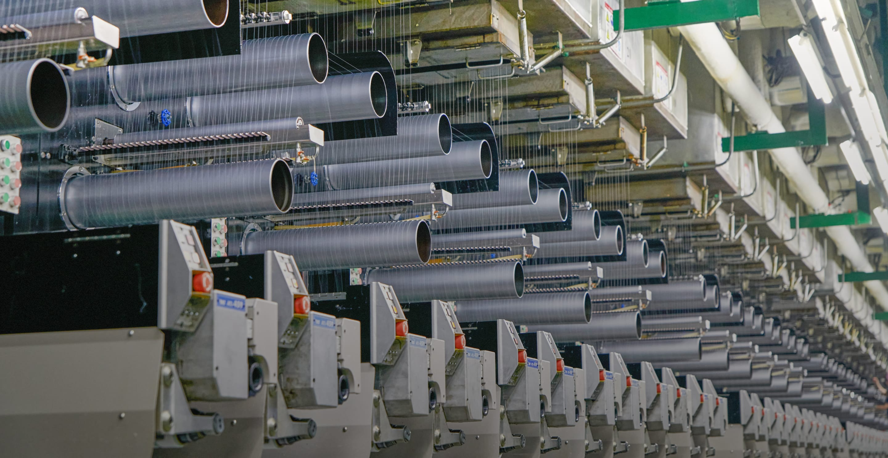

최초의 길을 걸어온
프런티어 정신
프런티어 정신
프런티어 정신
Fiber &
Petrochemical
Petrochemical

바탕으로 끊임없는 도전과 변화를 추구하며, 지속가능한 미래를 향해
나아가고 있습니다.
Fiber &
Petrochemical
Petrochemical
태광산업, 대한화섬은 섬유와 석유화학 산업에서 축적된 기술을
바탕으로 끊임없는 도전과 변화를 추구하며, 지속가능한 미래를 향해 나아가고 있습니다.
-

태광산업 -

대한화섬 -

태광화섬(상숙) 유한공사
Teakwang
Industrial
Industrial
01
태광산업
1
/
3
대한민국 대표 첨단소재기업
1950년 설립되어 국내 최초로 스판덱스 등을 생산한 대한민국 대표 첨단소재 기업입니다. 1995년 PTA 공장 준공으로 섬유·석유화학 수직계열화를 실현했습니다.
-
1950.10.25
설립 - 석유·섬유 수직계열화 완성
- 국내 최초 스판덱스 생산
Daehan
Synthetic Fiber
Synthetic Fiber
02
대한화섬
2
/
3
고객과 함께 성장하는 화섬업계 선두주자 대한화섬입니다
1968년 국내 최초로 폴리에스테르를 생산한 이후, 국내외에 고품질의 폴리에스테르를 공급하고 있습니다.
-
1963.10.22
설립 - 폴리에스터 필라멘트사
- 대표 브랜드 ACEPORA
Taekwang
Synthetic Fiber
Synthetic Fiber
03
태광화섬(상숙) 유한공사
3
/
3
태광산업 해외시장 개척을 위한 발판
2003년 태광산업 해외시장 개척을 위해 설립되었습니다. 다양한 물성의 스판덱스를 생산하고 있습니다.
-
2003.12.12
설립 - 태광산업 해외시장 개척
- 스판덱스 생산
태광산업
대한화섬
태광화섬(상숙) 유한공사